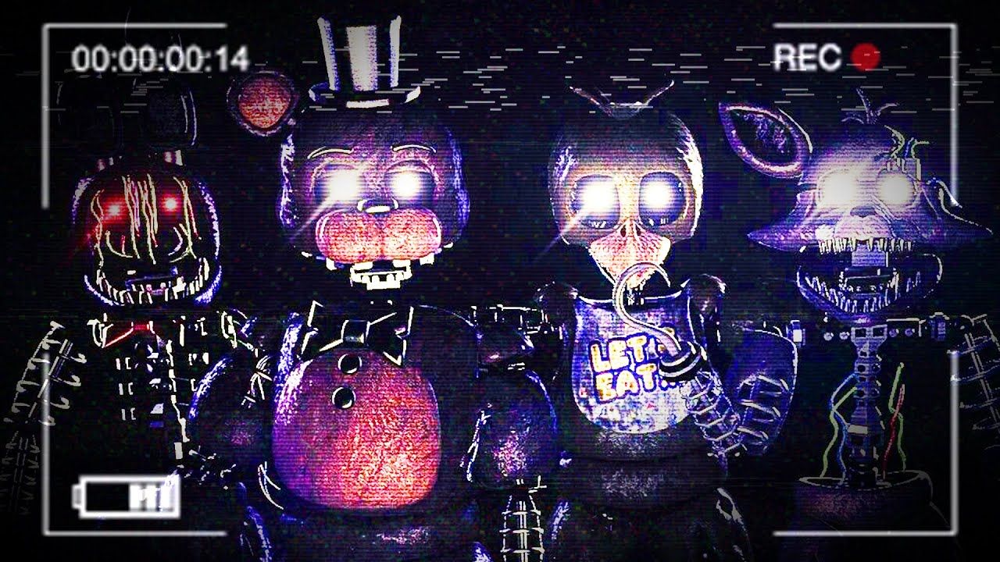
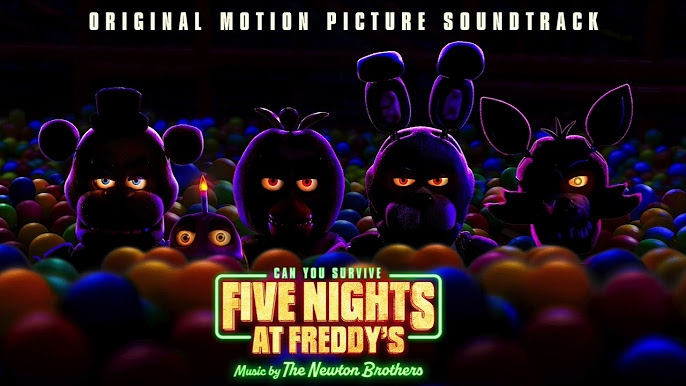

Accueil
Histoire
Surréalisme dans FNAF
Secret Non Dévoilé
Communauté
Crédit
Dans cette partie, nous allons vous lister différentes choses créées par la communauté de FNaF
Les Fangames

Les Musiques
